Complete Revision Notes & Study Guide for Pre-IB Students
Also widely taught as MRS GREN (Movement, Respiration, Sensitivity, Growth, Reproduction, Excretion, Nutrition) — same 7 features, different mnemonic. Use whichever your teacher uses!
🔊 Click the blue speaker buttons next to each term to hear pronunciation
The chemical reactions inside cells that break down nutrient molecules to release energy for metabolism.
Most organisms use oxygen (aerobic respiration 有氧呼吸). Some can do it without oxygen (anaerobic respiration 无氧呼吸).
Key Point: Respiration ≠ breathing! It's a cellular process happening in every living cell.
The ability to detect changes in the internal or external environment and respond appropriately.
Examples: A plant growing towards light, you pulling your hand away from a hot surface, bacteria moving away from harmful chemicals.
Taking in materials for energy, growth, and development. Different organisms have different methods:
• Plants: Photosynthesis 光合作用 (make own food)
• Animals: Ingest other organisms
• Fungi: Absorb nutrients from dead matter
Growth: Permanent increase in size and dry mass （干重） (not just water absorption!). Caused by increase in cell number or cell size.
Development: Changes in form and function as an organism matures (e.g., tadpole → frog).
Removal of waste products of metabolism （代谢废物） (toxic substances produced by chemical reactions in cells).
In humans: CO₂ (from lungs), urea (from kidneys), sweat. In plants: O₂ (at night), some compounds via leaves.
Note: Excretion ≠ egestion （排遗：排出未消化的食物残渣）. They're different!
Processes that make more of the same kind of organism — producing new individuals.
Two types:
• Asexual 无性繁殖: One parent only (e.g., binary fission, budding)
• Sexual 有性繁殖: Two parents, involves fertilization (offspring vary from parents)
A tool used by taxonomists （分类学家） (scientists who classify organisms) to identify unknown organisms by asking a series of yes/no questions, each with two possible answers.
Traditional classification keys were based on morphology 形态学 (external shape/form) and anatomy 解剖学 (internal structure) — features scientists could easily observe and measure.
Modern classification also uses DNA/protein analysis: organisms that share very similar DNA sequences are closely related. For example, humans and chimpanzees share ~98.6% of their genes!
| Kingdom | Cell Type | Key Features | Examples |
|---|---|---|---|
| Prokaryote 原核生物 |
No nucleus （无细胞核） (no membrane-bound organelles) |
Unicellular 单细胞, very small, DNA in a circular strand (not in a nucleus). No mitochondria, chloroplasts, or Golgi apparatus. | Bacteria (e.g., Salmonella) |
| Protoctist 原生生物 |
Nucleus present Can be unicellular OR multicellular |
Very diverse group. Some are animal-like (heterotrophs 异养), others plant-like (photosynthetic 光合自养). Don't fit neatly into other kingdoms. | Amoeba, Paramecium, Seaweed (Plasmodium) |
| Fungi 真菌 |
Eukaryotic cells with nuclei | Heterotrophic feeders (absorb nutrients from dead/decaying organic matter). Cell walls made of chitin （几丁质） (NOT cellulose). Most are multicellular (hyphae/mycelium structure). | Mushrooms, Mould, Yeast, Penicillium |
| Plant 植物 |
Eukaryotic cells with nuclei & chloroplasts | Multicellular, autotrophic （自养） (photosynthesis). Cell walls made of cellulose （纤维素）. Contains chlorophyll for photosynthesis. | Trees, Flowers, Mosses, Ferns, Algae* |
| Animal 动物 |
Eukaryotic cells with nuclei (NO cell wall) | Multicellular, heterotrophic （异养） (ingest food). No cell walls, no chloroplasts. Usually capable of movement. | Humans, Insects, Fish, Birds, Worms |
The 7 Taxonomic Levels (Broad → Specific):
💡 Moving DOWN the hierarchy → organisms share MORE similarities but FEWER differences between members.
Every species has a unique two-part scientific name in Latin. This system was developed by Swedish scientist Carl Linnaeus （林奈）.
Example: Lion's scientific name
Panthera leo
Rules for writing scientific names:
More examples:
| Feature | Fish | Amphibian | Reptile | Bird | Mammal |
|---|---|---|---|---|---|
| Cold/Warm blooded 体温 | Cold 冷血 ❄️ | Cold 冷血 ❄️ | Cold 冷血 ❄️ | Warm 恒温 🔥 | Warm 恒温 🔥 |
| Skin covering 体表覆盖 | Scales 鳞片 (+ mucus) | Moist, smooth | Dry scales | Feathers 羽毛 | Fur/Hair 毛发 |
| Breathing organ 呼吸器官 | Gills 鳃 | Lungs + Skin | Lungs 肺 | Lungs | Lungs |
| Reproduction 繁殖 | Eggs in water | Eggs in water | Eggs on land | Hard-shelled eggs | Live birth* (mostly) |
| Has backbone? | ✅ ALL YES — they're all vertebrates! | ||||
*Some mammals lay eggs (platypus, echidna) — called monotremes!
All viruses have TWO basic components:
Many viruses also have spikes 刺突 on the surface that help attach to host cells.
Viruses FAIL the RINGER test:
Viruses are obligate parasites （专性寄生物） — they MUST be inside a living cell to function:
This is why viruses cause disease — they damage or destroy the cells they infect. Examples: Flu virus, HIV, Coronavirus, Tobacco Mosaic Virus (infects plants).
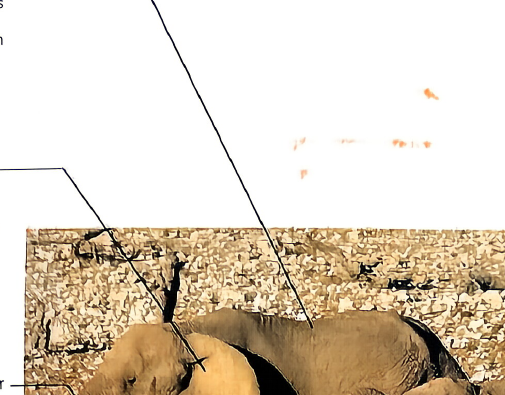
Textbook p3 · Elephants demonstrating all life processes
🗣️ When shown this diagram, you must be able to say:
⚠️ Common exam traps:
• Confusing excretion with egestion
• Thinking growth = just getting bigger (water absorption doesn't count!)
• Forgetting that respiration happens in EVERY cell (not just lungs!)
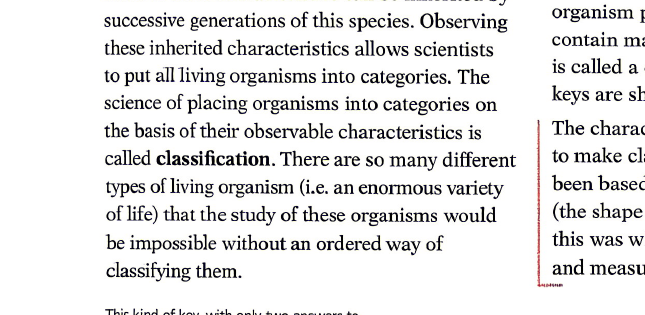
Textbook p5 · Branching decision tree
🗣️ When shown this diagram, trace the path and say:
⚠️ Common mistakes:
• Forgetting that Protoctists CAN be multicellular (seaweed!)
• Mixing up Fungi vs Plants (chitin vs cellulose cell walls)
• Not knowing that Prokaryotes have NO nucleus at all
Textbook p6 · Binomial nomenclature example
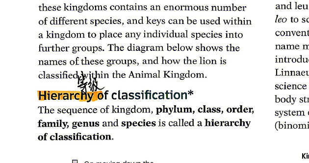
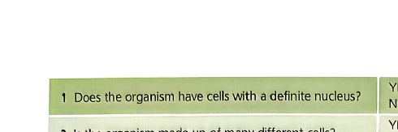
🗣️ When shown this diagram, you must be able to explain:
| Level | Lion's Group | Key Point to Say |
|---|---|---|
| Kingdom 界 | Animalia | All animals are ingestive heterotrophs (eat other organisms) |
| Phylum 门 | Chordata | Has notochord (backbone) in development |
| Class 纲 | Mammalia | Fur/hair, mammary glands produce milk, differentiated teeth |
| Order 目 | Carnivora | Meat-eating adaptations: carnassial teeth, retractable claws |
| Family 科 | Felidae | All cats (big cats + domestic cats), binocular vision |
| Genus 属 | Panthera | "Big cats" only — lion, tiger, leopard, jaguar (can roar!) |
| Species 种 | Panthera leo | The lion specifically — unique worldwide name |
📝 Also explain the binomial rules:
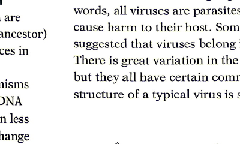
Textbook p7 · Why viruses don't fit any kingdom
🗣️ Point to EACH labeled part and explain:
🚨 Critical exam answer — "Why viruses are NOT alive":
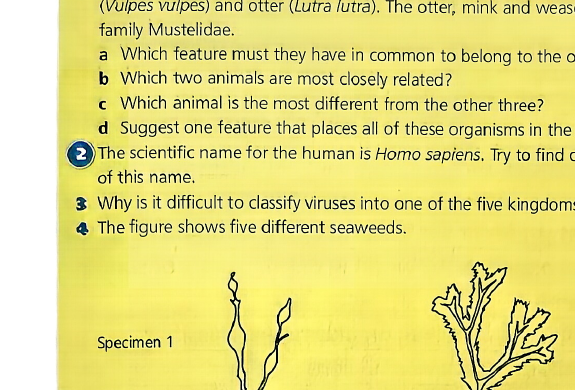
Textbook p8 · Build your own dichotomous key
🗣️ What this exercise trains you to do:
💡 Example question pattern for seaweed:
Q1: Is the body flat/leaf-like?
├ YES → go to Q2
└ NO (branching/filamentous) → go to Q3
Textbook p10
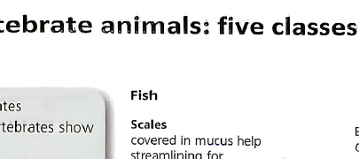
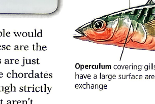
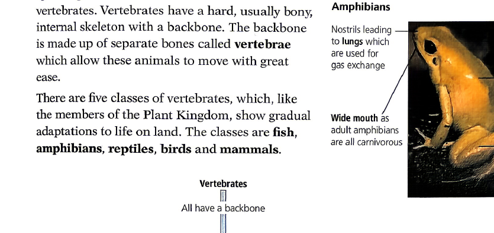
🗣️ Fish Diagram — point to each label and say:
🗣️ Amphibian (Frog) Diagram — point to each label and say:
🗣️ Trace the Vertebrate Key from top to bottom:
Textbook p11 · Detailed anatomical labels
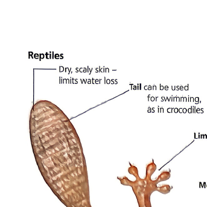
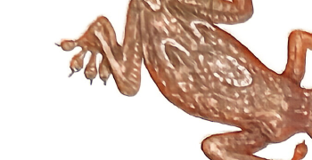
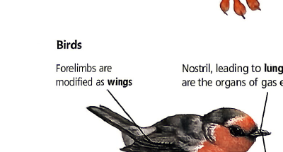
🦎 Reptile (Lizard) Labels:
Photo: crocodile showing typical reptilian features — dry scaly skin, eyes on top of head, sharp pointed teeth for catching prey.
🐦 Bird (Robin) Labels:
Photo: heron — typical bird features: feathers, long pointed beak for fish, large eyes, long legs for wading in mud.
🐭 Mammal (Mouse/Rat) Labels:
Textbook p13 · The complete picture — memorise this!
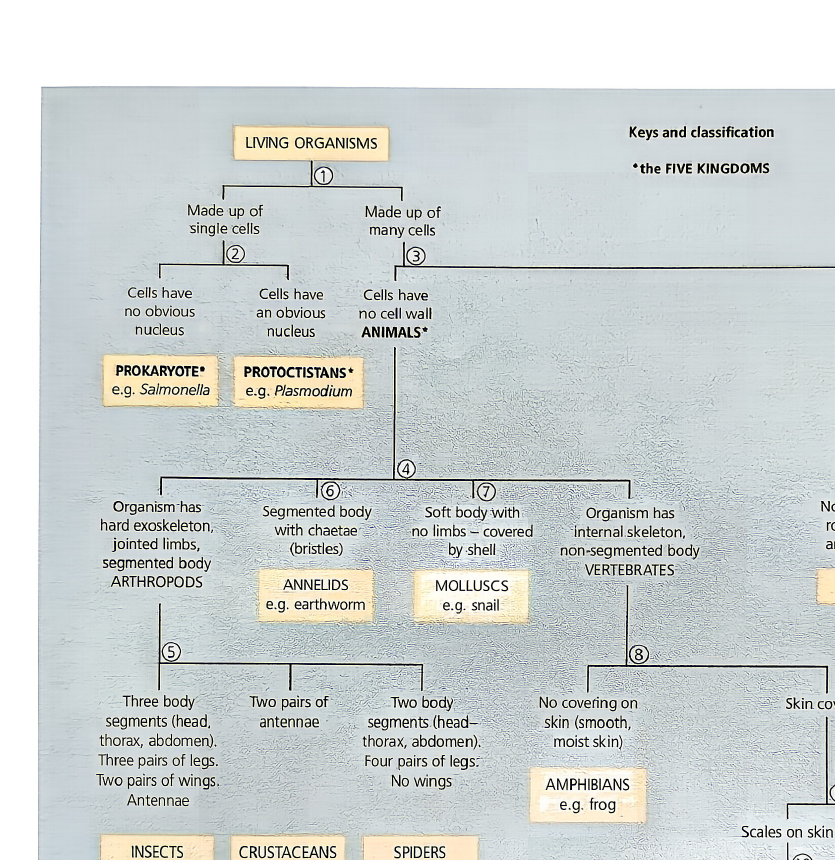
🏆 This is THE MASTER DIAGRAM — You Must Be Able to Explain Every Branch!
① Starting Point: Living Organisms
Single-celled vs Multi-cellled?
→ Single cell, NO nucleus → PROKARYOTE (Salmonella)
→ Single cell, HAS nucleus, no cell wall → PROTOCTISTAN (Plasmodium)
② Animals (no cell wall, no chloroplasts)
Body plan:
→ Segmented body, jointed limbs → ARTHROPODS (Insects/Crustaceans/Spiders)
→ Soft body, no limbs, shell → MOLLUSCS (snail)
→ Segmented body, bristles → ANNELIDS (earthworm)
→ Internal skeleton (backbone) → VERTEBRATES ↓
③ Vertebrates Branch:
→ Smooth moist skin → AMPHIBIANS (frog)
→ Dry scales → REPTILES (lizard) | Wet scales → FISH (stickleback)
→ Feathers → BIRDS (thrush) | Fur/hair → MAMMALS (human)
④ Plants (have chloroplasts)
→ No true roots/stems/leaves → ALGAE
→ Stems+leaves but no roots → MOSSES
→ Has proper roots, stems, leaves:
├ Spores produced → FERNS
└ Seeds produced → SEED PLANTS (oak tree)
⑤ Fungi (feed by absorption)
→ Does NOT contain chloroplasts, feeds by external absorption → FUNGI (bread mould)
🧪 Exam Technique — "Look at Figure 13 and describe..."
If asked to use this key to classify an unknown organism, you should: (1) Start at the top with "All living organisms", (2) Follow the YES/NO path based on what you observe about the specimen, (3) Name the final group you reach. Always mention the observable features that led you to each decision. For example: "The organism has a backbone (vertebrate), has fur (mammal), therefore it belongs to Class Mammalia."
✅ Check off each item as you master it. Aim for 12/12 before your test!
Earlier we defined a species loosely as "one type of organism". But IGCSE requires a much more precise definition:
⭐ IGCSE Official Definition
A species is a group of organisms that can reproduce to produce fertile offspring.
物种：能够相互交配并产生可育后代的一群生物
Key word: FERTILE （可育的） — the offspring must themselves be able to reproduce. This is what separates true species from look-alikes.
✅ Same Species Example
Horse + Donkey → Mule.
But wait! Mules are sterile (cannot reproduce). So horses and donkeys are different species, even though they can mate.
❌ Trap Example
Two different dog breeds (e.g. Chihuahua + Great Dane) → still produces fertile puppies. So all domestic dogs = ONE species (Canis familiaris), despite huge appearance differences.
Classification isn't just about appearance — it aims to reflect evolutionary relationships （进化关系）, i.e. how closely related organisms are by common ancestry.
🔑 Three Key Principles:
Worked example — comparing primates:
| Pair of organisms | % DNA similarity | Common ancestor | Relationship |
|---|---|---|---|
| Human ↔ Chimpanzee | ~98.8% | Recent (~6 million years ago) | Very close 🟢 |
| Human ↔ Mouse | ~85% | Distant (~90 million years ago) | Distant 🟡 |
| Human ↔ Fruit fly | ~60% | Very distant (~600 million years ago) | Very distant 🔴 |
| Human ↔ Yeast | ~30% | Extremely distant (~1 billion years ago) | Extremely distant ⚫ |
Arthropods （节肢动物） are the largest animal group — they have jointed legs （分节的足） and a hard exoskeleton （外骨骼） made of chitin. IGCSE requires you to know the four main groups based on body features and number of legs:
| Feature | Myriapods 多足 | Insects 昆虫 | Arachnids 蛛形 | Crustaceans 甲壳 |
|---|---|---|---|---|
| Number of legs | Many (per segment) | 6 (3 pairs) | 8 (4 pairs) | Usually 10+ (5+ pairs) |
| Body parts | Many segments | 3 (head, thorax, abdomen) | 2 (cephalothorax, abdomen) | Variable, often covered by shell |
| Antennae pairs | 1 | 1 | 0 (none) | 2 (unique!) |
| Wings | ❌ None | ✅ Often present | ❌ None | ❌ None |
| Examples | Centipede, Millipede | Bee, Fly, Ant | Spider, Scorpion, Tick | Crab, Lobster, Woodlouse |
| Spec # | Specification Point (What you must know) | Status | Where in This Guide |
|---|---|---|---|
| 1.1.1 | Describe characteristics of living organisms: movement, respiration, sensitivity, growth, reproduction, excretion, nutrition | ✅ Full | §1 (RINGER/MRS GREN) |
| 1.2.1 | State organisms can be classified into groups by features they share | ✅ Full | §2, §3 |
| 1.2.2 | Describe a species as a group that can reproduce to produce fertile offspring | ⚠️ Was Gap | §9.1 (NEW) |
| 1.2.3 | Describe binomial system: genus + species names | ✅ Full | §4 |
| 1.2.4 | Construct and use dichotomous keys | ✅ Full | §2 + §8 (Fig 4, 6, 9) |
| 1.2.5 | Explain classification aims to reflect evolutionary relationships | ✅ Full | §2 + §9.2 |
| 1.2.6 | Explain DNA base sequences used as means of classification | ✅ Full | §2 + §9.2 |
| 1.2.7 | Explain: more recent ancestor = more similar DNA sequences | ⚠️ Enhanced | §9.2 (NEW) |
| 1.3.1 | State main features placing animals and plants into appropriate kingdoms | ✅ Full | §3 Table |
| 1.3.2 | State main features for animal kingdom groups: vertebrates + arthropods (myriapods, insects, arachnids, crustaceans) | ⚠️ Was Gap | §5 + §9.3 (NEW) |
| 1.3.3 | Classify organisms using features from 1.3.1 & 1.3.2 | ✅ Full | §5, §9.3 + §8 Fig 13 |
| 1.3.4 | State main features for five kingdoms: animal, plant, fungus, prokaryote, protoctist | ✅ Full | §3 Table |
| 1.3.5 | State main features for plant kingdom groups: ferns + flowering plants (dicotyledons, monocotyledons) | ⊘ Not in Course | — |
| 1.3.6 | Classify organisms using features from 1.3.4 & 1.3.5 | ⊘ Not in Course | — |
| 1.3.7 | State features of viruses: protein coat + genetic material | ✅ Full | §6 + §8 Fig 5 |
✅ 13/13 In-Scope Specification Points Fully Covered
3 gaps identified and filled in Section 9 · 2 points (1.3.5/1.3.6 plant kingdom subgroups) excluded per course scope · Verified against Cambridge IGCSE Biology 0610 (2023–2025 syllabus)